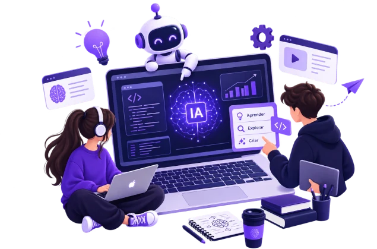
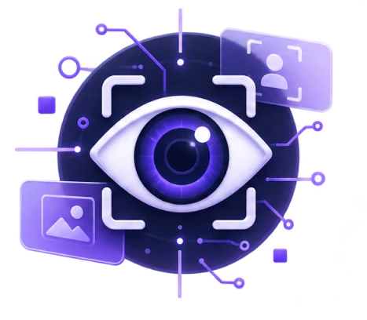
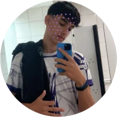

Entenda inteligência artificial de forma simples e prática.
Quatro assuntos, um laboratório interativo em cada um e uma corrida para testar o que você aprendeu.
Explore o universo da IA
Um site feito por estudantes de TI
Em nosso site, buscamos abranger um tema muito debatido nos dias atuais e que é de suma importância para o presente e o futuro. Como parte das disciplinas do curso técnico em TI, escolhemos a inteligência artificial. Com este projeto, queremos informar sobre o assunto, debater o tema e discutir seu impacto na sociedade em que vivemos.

Máquinas que enxergam
A visão computacional é uma tecnologia em constante evolução, usada em diversos setores, incluindo indústria, saúde e agricultura. Ela permite que as máquinas “vejam” e interpretem informações visuais, fornecendo dados precisos para melhorar a tomada de decisão.
Da ficção para o bolso
Cada vez mais a inteligência artificial vem se tornando algo necessário no nosso dia a dia. Embora o primeiro esboço de uma IA exista desde 1950, o desenvolvimento tecnológico recente fez com que essa tecnologia, que só parecia possível na ficção, se tornasse comum e de fácil acesso para todos. Mas, assim como na ficção, nos tornamos dependentes dela rapidamente.
Sua trilha de aprendizagem
Siga na ordem ou pule para o assunto que mais te interessa.
Ensine a máquina
Desenhe formas, treine um modelo de machine learning e veja ele aprender na hora.
Grupo EDUTEC 2026
Quem criou este site.

Nickolas ZiligEscolha por onde começar
Aprenda os fundamentos e avance pelos assuntos no seu ritmo. Cada um tem um laboratório interativo e uma videoaula para continuar estudando.
Ensine a máquina
Desenhe uma forma e veja o palpite da máquina. Se ela errar, ensine a resposta certa: cada desenho vira um exemplo de treino, e o modelo melhora na hora. É assim que o machine learning funciona: dados entram, padrões saem.
- Desenhe uma das formas no quadro.
- Veja o palpite e quanta certeza a máquina tem.
- Ensine: clique na forma certa para guardar o desenho como exemplo.
Quadro de desenho
Desenhe aqui com o mouse ou o dedo
Como a máquina vê: o desenho é recortado, centralizado e reduzido a 16 × 16 = 256 pixels. Cada pixel vira um número de 0 a 1. A máquina só enxerga essa lista de números.
Palpite da máquina
Desenhe algo para a máquina tentar adivinhar.
Ensine: este desenho é um…
Por que esse palpite? Estes são os exemplos de treino mais parecidos com o seu desenho:
Dados de treino
Os exemplos marcados com foram gerados automaticamente para a máquina já começar sabendo alguma coisa. Renomeie as categorias para ensinar o que quiser: letras, números, emojis desenhados…
Avaliar o modelo
A máquina tenta adivinhar cada exemplo de treino usando só os outros (validação “deixe um de fora”). Assim medimos se ela aprendeu de verdade ou só decorou.
Como ela pensa
Este modelo usa o algoritmo k vizinhos mais próximos (k-NN), um dos mais simples do machine learning:
- Transforma o desenho em 256 números.
- Mede a distância entre esses números e os de cada exemplo de treino.
- Pega os 5 exemplos mais próximos e faz uma votação: os mais parecidos têm voto mais forte.
Não existe regra escrita à mão dizendo o que é um triângulo. Tudo vem dos exemplos.
Experimentos para fazer na sala
A máquina só conhece o que viu
Apague os dados e ensine triângulos sempre apontando para cima. Depois desenhe um de cabeça para baixo. Ela erra? É o mesmo problema de uma IA treinada com dados que não representam todo mundo.
Mais exemplos, mais acerto?
Avalie o modelo com 2 exemplos por categoria e depois com 10. Compare as porcentagens. É por isso que empresas coletam tantos dados.
Ensine errado de propósito
Marque alguns círculos como “Quadrado” e veja os palpites piorarem. Uma IA é tão boa quanto os dados que recebe.
Aplicações da Inteligência Artificial
Veja como a IA participa da saúde, da indústria, do transporte e da educação.
Na saúde
A inteligência artificial tem contribuído significativamente para a área da saúde ao tornar diagnósticos mais rápidos e precisos, reduzir custos e melhorar o atendimento, apesar de ainda enfrentar desafios. Segundo a Organização Mundial da Saúde, a IA pode aprimorar os serviços de saúde ao apoiar decisões clínicas, pesquisas e ações de saúde pública. A médica Rosália Morais Torres, da Universidade Federal de Minas Gerais, destaca seu papel no combate a doenças tropicais, auxiliando no diagnóstico, na detecção de surtos e na formulação de estratégias de prevenção mais eficazes.
Na indústria
O uso da inteligência artificial na indústria tem tornado os processos mais eficientes e precisos. A automação com robôs aumenta a produtividade e reduz erros, enquanto a manutenção preditiva evita falhas e diminui custos. Além disso, a IA otimiza a logística e a cadeia de suprimentos, melhora os processos produtivos, impulsiona a inovação no desenvolvimento de novos produtos e contribui para um atendimento ao cliente mais ágil, fortalecendo a competitividade das empresas.
No transporte
A inteligência artificial tem transformado o setor automotivo ao possibilitar veículos autônomos capazes de processar dados de sensores, câmeras e GPS para reconhecer objetos, prever movimentos e tomar decisões rápidas, aumentando a segurança. Embora ainda restrita, essa tecnologia já opera em algumas cidades dos Estados Unidos por meio da Waymo, empresa do grupo do Google. Além da direção autônoma, a IA é usada no design automotivo, no suporte ao motorista com sistemas de prevenção de acidentes e em assistentes virtuais que personalizam a experiência dentro do veículo.
Na educação
A inteligência artificial tem contribuído para a educação ao possibilitar um ensino mais personalizado, adaptado ao ritmo e às necessidades de cada estudante, conforme destaca João Fernando Costa Júnior. Plataformas adaptativas, como o Aprimora, usam IA para ajustar conteúdos, apoiar alunos com dificuldades e auxiliar professores. Além disso, ferramentas como o ChatGPT facilitam pesquisas, ampliam o acesso ao conhecimento e tornam o aprendizado mais acessível, embora exijam uso crítico e consciente.
Hora de jogar
Corra com o BIN ou o Marcio, desvie dos obstáculos e responda perguntas sobre IA. Ou entre na Central de Comando 3D e resolva incidentes causados pelo mau uso da IA.
Pule blocos de dados e chipsAgache sob os scannersColete bits: +10 pontos
Inova Runner foi criado pelo grupo EDUTEC e adaptado para o site.
A IA no cinema
Seis filmes que imaginaram máquinas inteligentes. Para cada um, uma pergunta para debater em sala e uma régua de quanto a história está perto da IA que existe hoje.